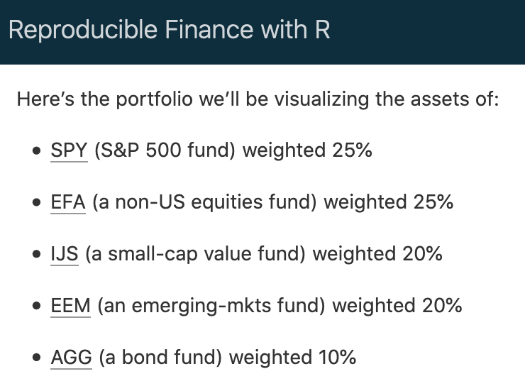
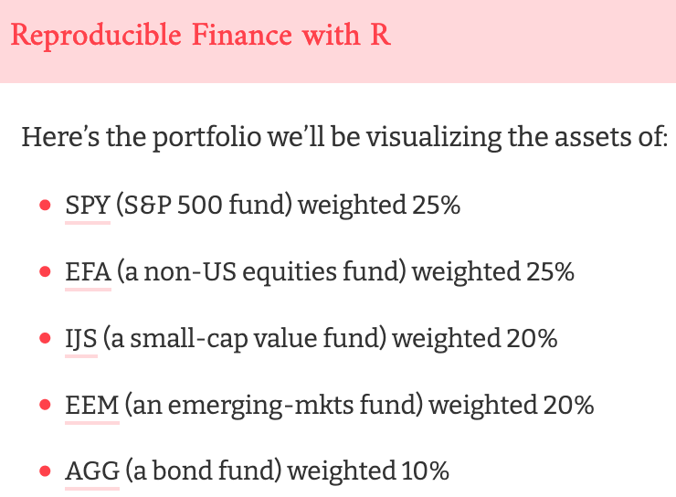

This article describes how to create a website that contains a collection of Distill articles. Distill websites include a top level navigation bar that enables readers to discover and browse articles. For example, the documentation pages you are reading now are a Distill website. You can view more examples of Distill websites on the package reference site.
Once you’ve created your website locally, there are a variety of ways available to publish your site to the web.
Getting started
Website or blog?
Structure difference: Websites are just collections of pages you can navigate to via the top navigation bar, whereas blogs have collections of posts that can be indexed and syndicated (via their RSS feed). Distill blogs are a distill website with added blog posts.
Layout difference: Within a blog, Distill enables a special page on your website called a listing page. Whereas websites require you to manually set up links to pages, a listing page collects links to posts for you, displaying key metadata (like date published, author, categories, title, etc.) and a thumbnail image. When you knit and publish a new post, this page automatically updates by adding the most recent post to the top of the list.
Workflow difference: Furthermore, website pages and root pages of blogs are re-rendered when the site is rebuilt but blog articles are not. Each blog article has to be rendered on its own, with intent. Why? Given that R package upgrades have a tendency to break older code, continuously re-rendering old posts is nearly impossible to do without errors, especially over longer periods of time.
Creating a website
If you are using RStudio, the easiest way to get started is to use the Distill Website option in the RStudio New Project dialog:

A new RStudio Project for the website will be created and opened. The website will include the following files:
| Option | Description |
|---|---|
_site.yml |
Website configuration file. |
index.Rmd |
Website home page. |
about.Rmd |
Website about page. |
If you are not using RStudio you can also call the Distill create_website() function:
library(distill)
create_website(dir = "my-website", title = "My Website")
A new website containing Home and About pages will be created within the my-website directory.
Authoring articles
When you use the RStudio Knit command on a Distill article within a website, only that article will be rendered and previewed:

You can also preview a single article from within a website by passing the name of the article’s Rmd file to render_site():
render_site("about.Rmd")
This will build only the specified article (as opposed to all articles in the site). This is our recommended workflow for authoring articles since it offers the fastest turnaround time for previews (since only the article you are working on is rendered).
Building the site
After you’ve authored the various articles contained within the website, you will want to build the entire site before deploying it.
If your Distill website is contained within an RStudio project, you can use the Build Website command available in the Build pane to generate the site:

When you build a website, the following things occur:
All of the Rmd and md files in the root website directory will be rendered into HTML. Note however that markdown files beginning with “_” are not rendered (this is a convention to designate files that are included by top level documents).
Blog posts will be copied into the
postssub-directory of the output directory and blog listing pages will be re-generated.The generated HTML files and any supporting files (e.g. CSS and JavaScript) are copied into an output directory (
_siteby default).
The HTML files within the _site directory are now ready to deploy as a standalone static website.
To build a website from the command line, use the rmarkdown::render_site() function:
Site output
The _site.yml file has a number of options that affect site output including where it is written and what files are included and excluded from the site. Here’s an example that makes use of a few of these options:
_site.yml
name: "my-website"
output_dir: "_site"
include: ["import.R"]
exclude: ["docs.txt", "*.csv"]The name field provides a suggested URL path for your website when it is published (by default this is just the name of the directory containing the site).
The output_dir field indicates which directory to copy site content into (“_site” is the default if none is specified). Note that this can be “.” to keep all content within the root website directory alongside the source code.
The include and exclude fields enable you to override the default behavior visa-vi what files are copied into the output directory. By default, all files within the website directory are copied into the output directory (e.g. “_site”) save for the following:
Files beginning with
"."(hidden files).Files beginning with
"_"Files known to contain R source code (e.g.
".R",".s",".Rmd"), R data (e.g.".RData",".rds"), or configuration data (e.g."rsconnect","packrat")).
The include and exclude fields of _site.yml can be used to override this default behavior (wildcards can be used to specify groups of files to be included or excluded). Note that the include and exclude fields target only top-level files and directories (i.e. a directory is either included or not, you can’t exclude a subset of files within a directory).
Note also that include and exclude are not used to determine which Rmd files are rendered (all of them in the root directory save for those named with the _ prefix will be rendered).
The R Markdown documentation on creating websites has documentation on additional available features and configuration options. The remainder of this article describes features that are specific to Distill websites.
Site navigation
Site navigation bars include the site’s title, an optional logo, top-level links to articles, and if need be drop-down menus that include links to several articles. For example:

Elements of the site navigation bar are specified within the navbar section of the _site.yml file. For example, here is the YAML that was used to create the navigation bar displayed above:
---
name: "distill"
title: "Distill for R Markdown"
navbar:
logo:
image: images/logo.png
href: https://www.rstudio.com
right:
- text: "Figures"
href: figures.html
- text: "Tables"
href: tables.html
- text: "Citations"
href: citations.html
- text: "Publish"
menu:
- text: "Publishing Articles"
href: publish_article.html
- text: "Publishing a Website"
href: publish_website.html
- text: "---"
- text: "Article Metadata"
href: metadata.html
- icon: fab fa-github
href: https://github.com/rstudio/distill
output: distill::distill_article
---Note that we specify that the menu items appear on the right side of the navigation bar. We could have also used left, or chosen to put some items on the left and some on the right.
Note also that we used an icon for one of the menus, specifying the Font Awesome fab fa-github identifier for the GitHub icon (you can use any Font Awesome icon). If there isn’t a Font Awesome icon that matches the image you want, you can also specify a custom image rather than an icon.
Site search
You can add a search box to the navigation bar using the search field of the navbar key within _site.yml. For example:
---
name: "distill"
title: "Distill for R Markdown"
navbar:
logo:
image: images/logo.png
href: https://www.rstudio.com
search: true
---Note that only articles with a description metadata field are included within search results. Also note that search is enabled by default for blog sites.
Source code
If you want to display a link to the source code for your website on the navigation bar, add a source_url field to the navbar definition. For example:
---
name: "distill"
title: "Distill for R Markdown"
navbar:
logo:
image: images/logo.png
href: https://www.rstudio.com
source_url: https://github.com/rstudio/distill
---Note that if you’ve already defined a repository_url field in _site.yml you can just use source_url: true and your repository_url will be used for the link.
Site footer
When you use a navigation bar, you can optionally also include a site footer which uses the same theme (background and foreground colors). For example:

To add a footer, simply include a file named _footer.html within your main site directory. For example:
_footer.html
© Copyright 2018 [The Distill Template Authors]
(https://github.com/distillpub/template/blob/master/AUTHORS)
and [RStudio, Inc](https://www.rstudio.com).
Software licensed under the [Apache License, v2.0]
(https://www.apache.org/licenses/LICENSE-2.0).Theming
Distill ships with a default CSS framework that can be fully customized. To change the appearance of your Distill site or blog, you can use CSS to override the default values, provided you are comfortable writing CSS rules and selecting CSS elements. Alternatively, you may create and apply a Distill theme, which allows you to customize common elements without needing to create a CSS file from scratch.
Create theme
You can use the create_theme() function to add a theme CSS file in the current working directory.
For example:
create_theme(name = "theme")
This function creates a file named theme with the file extension .css. The file defines CSS custom properties that you can edit to create a custom Distill theme. This file has several sections, defined by a common scope. For each scoped section, you’ll find multiple properties that are defined that look something like this:
scope {
--a-property: 50px;
--another-property: #fff;
}The values provided for each property (i.e., those in the right-most column) are the default values. For example, this portion at the top of the file allows you to quickly change the main font sizes for any Distill output format:
html {
/*-- Main font sizes --*/
--title-size: 50px;
--body-size: 1.06rem;
--code-size: 14px;
--aside-size: 12px;
--fig-cap-size: 13px;
/*-- More properties --*/
...
}Changing the values for each custom property is akin to developing your own custom CSS rules, but the theme allows you to bypass the detective work typically involved in discovering which CSS selectors are needed to change the key elements most users wish to control.
We’ll demonstrate how to edit and use a theme by showing a single article within a Distill website. The default theme is shown in Figure 1.

Figure 1: The default Distill theme
One of the fastest ways to change the default appearance is to use custom Google fonts. To do this, you need to do two things:
Embed the font using the @import method, and
Specify the font in the CSS file.
You can do both of these things inside your theme.css file. For example, let’s import the Amiri, Bitter, and DM Mono fonts:
/* Optional: embed custom fonts here with `@import` */
/* This must remain at the top of this file. */
@import url('https://fonts.googleapis.com/css2?family=Amiri');
@import url('https://fonts.googleapis.com/css2?family=Bitter');
@import url('https://fonts.googleapis.com/css2?family=DM+Mono');The @import requests must be at the very top of your theme.css, before any rules. Next, scroll down to the bottom of the properties with the html scope to specify the embedded fonts:
html {
...
/*-- Specify custom fonts ~~~ must be imported above --*/
--heading-font: "Amiri", serif;
--mono-font: "DM Mono", monospace;
--body-font: "Bitter", sans-serif;
--navbar-font: "Amiri", serif;
}But we can go even further! Let’s also change the background color of the navbar, the text color, and the hover color. These three properties are listed with the .distill-site-header scope. For example:
/*-- WEBSITE HEADER + FOOTER --*/
/* These properties only apply to Distill sites and blogs */
.distill-site-header {
--title-size: 18px;
--text-color: #ff414b; /* edited */
--text-size: 15px;
--hover-color: #dd424c; /* edited */
--bkgd-color: #ffd8db; /* edited */
}Our new custom theme is shown below. In this example, we only changed four font properties and three website header properties, and already our site looks quite different from the default.
Themed site

Figure 2: A custom Distill theme
Default site
Figure 3: The default Distill theme
As you can see, we include a lot more properties for you to explore and edit in your own custom theme. If you find yourself editing too much and want to return back to a default value, you may set any property to unset. For example:
html {
/*-- Main font sizes --*/
--title-size: unset;
}Of course, there may be additional properties that you’d like to change, and you may always add in your own custom CSS rules in the space provided at the bottom of your theme file, or in a separate .css file.
To see your theme in action, you’ll need to also apply it to your article or site.
Apply theme
The previous section described how to create and customize a Distill theme file.
How do you apply a custom theme to a Distill site or blog? You have two options:
Apply it site-wide by adding a
themekey to the top-level of your_site.ymlconfiguration file:name: "distill" title: "Distill for R Markdown" theme: theme.css navbar: # (navbar definition here)Apply to an individual article by adding a
themekey to your article’s YAML front-matter:--- title: "The Sharpe Ratio" output: distill::distill_article: toc: true theme: theme.css ---
The second option allows for you to apply your theme to individual articles, while using a different theme for the rest of your site. Note that this is only possible for stand-alone articles within a website — you cannot apply a theme to individual blog posts only.
Blog posts (along with listing and custom listing pages) will follow the theme if you use the first option and add it to your _site.yml.
Custom CSS styles
If you prefer working with CSS directly, or you would like to change site elements not included in the theme file, you can define your own CSS as well. For example, we can override the default styles for bullets and links by adding additional CSS rules in the space provided at the bottom of your theme.css. We’ll add the following CSS rules on top of the theme we made in the previous section:
/*-- Additional custom styles --*/
/* Add any additional CSS rules below */
/* Change bullets */
ul > li::marker {
font-size: 1.125em;
color: #ff414b;
}
/* Change link appearance */
d-article a {
border-bottom: 2px solid #ffd8db;
text-decoration: none;
}Here is the before (left) and after (right):

Using CSS, you can change anything about your site’s appearance. For example, the distill-site-nav class addresses both the header and footer, whereas the distill-site-header and distill-site-footer apply (respectively) to just the header and footer. Here is the CSS used for the default appearance:
.distill-site-nav {
color: rgba(255, 255, 255, 0.8);
background-color: #455a64;
font-size: 15px;
font-weight: 300;
}
.distill-site-nav a {
color: inherit;
text-decoration: none;
}
.distill-site-nav a:hover {
color: white;
}
.distill-site-header {
}
.distill-site-footer {
}
@media print {
.distill-site-nav {
display: none;
}
}To override any CSS properties, you may include a styles.css file in the main site directory and add a reference to it within your site output options. For example:
_site.yml
name: "distill"
title: "Distill for R Markdown"
navbar:
# (navbar definition here)
output:
distill::distill_article:
css: styles.cssExample themes
Below are some sample themes to see what is possible using a Distill theme, plus a handful of custom CSS rules.
Piping Hot Data
Inspiration
Screenshot

theme.css
/* base variables */
/* Edit the CSS properties in this file to create a custom
Distill theme. Only edit values in the right column
for each row; values shown are the CSS defaults.
To return any property to the default,
you may set its value to: unset
All rows must end with a semi-colon. */
/* Optional: embed custom fonts here with `@import` */
/* This must remain at the top of this file. */
@import url('https://fonts.googleapis.com/css2?family=Lato');
@import url('https://fonts.googleapis.com/css2?family=Fira+Mono');
@import url('https://fonts.googleapis.com/css2?family=Montserrat');
html {
/*-- Main font sizes --*/
--title-size: 50px;
--body-size: 1.0rem; /* edited */
--code-size: 0.9rem; /* edited */
--aside-size: 12px;
--fig-cap-size: 13px;
/*-- Main font colors --*/
--title-color: #000000;
--heading-color: rgba(0, 0, 0, 0.8);
--body-color: #383838; /* edited */
--aside-color: rgba(0, 0, 0, 0.6);
--fig-cap-color: rgba(0, 0, 0, 0.6);
/*-- Specify custom fonts ~~~ must be imported above --*/
--heading-font: 'Lato', sans-serif; /* edited */
--mono-font: 'Fira Mono', monospace; /* edited */
--body-font: 'Lato', sans-serif; /* edited */
--navbar-font: 'Montserrat', sans-serif; /* edited */
}
/*-- ARTICLE METADATA --*/
d-byline {
--heading-size: 0.6rem;
--heading-color: rgba(0, 0, 0, 0.5);
--body-size: 0.8rem;
--body-color: rgba(0, 0, 0, 0.8);
}
/*-- ARTICLE TABLE OF CONTENTS --*/
.d-contents {
--heading-size: 18px;
--contents-size: 13px;
}
/*-- ARTICLE APPENDIX --*/
d-appendix {
--heading-size: 15px;
--heading-color: rgba(0, 0, 0, 0.65);
--text-size: 0.8em;
--text-color: rgba(0, 0, 0, 0.5);
}
/*-- WEBSITE HEADER + FOOTER --*/
/* These properties only apply to Distill sites and blogs */
.distill-site-header {
--title-size: 20px; /* edited */
--text-color: #FFFFFF; /* edited */
--text-size: 20px; /* edited */
--hover-color: #383838; /* edited */
--bkgd-color: rgb(249, 83, 85); /* edited */
}
.distill-site-footer {
--text-color: rgba(255, 255, 255, 0.8);
--text-size: 15px;
--hover-color: white;
--bkgd-color: #0F2E3D;
}
/*-- Additional custom styles --*/
.posts-list .metadata .publishedDate {
color: rgb(249, 83, 85);
}
d-article p code {
color: #383838;
background: rgba(249, 83, 85, 0.1);
font-weight: 400;
font-size: 0.9em;
}
d-article a {
border-bottom: 2px solid rgba(249, 83, 85, 0.4);
text-decoration: none;
}
.distill-site-header .title {
font-weight: 600;
}
ul > li::marker {
color: rgb(249, 83, 85);
}Before I Sleep
Inspiration
Screenshot

theme.css
/* base variables */
/* Edit the CSS properties in this file to create a custom
Distill theme. Only edit values in the right column
for each row; values shown are the CSS defaults.
To return any property to the default,
you may set its value to: unset
All rows must end with a semi-colon. */
/* Optional: embed custom fonts here with `@import` */
/* This must remain at the top of this file. */
@import url('https://fonts.googleapis.com/css2?family=Cardo');
@import url('https://fonts.googleapis.com/css2?family=Alata');
html {
/*-- Main font sizes --*/
--title-size: 50px;
--body-size: 1.075rem; /* edited */
--code-size: 14px;
--aside-size: 12px;
--fig-cap-size: 13px;
/*-- Main font colors --*/
--title-color: #000000;
--heading-color: rgba(0, 0, 0, 0.8);
--body-color: rgba(0, 0, 0, 0.8);
--aside-color: rgba(0, 0, 0, 0.6);
--fig-cap-color: rgba(0, 0, 0, 0.6);
/*-- Specify custom fonts ~~~ must be imported above --*/
--heading-font: 'Alata', sans-serif; /* edited */
--mono-font: monospace;
--body-font: 'Cardo', serif; /* edited */
--navbar-font: 'Alata', sans-serif; /* edited */
}
/*-- ARTICLE METADATA --*/
d-byline {
--heading-size: 0.6rem;
--heading-color: rgba(0, 0, 0, 0.5);
--body-size: 0.8rem;
--body-color: rgba(0, 0, 0, 0.8);
}
/*-- ARTICLE TABLE OF CONTENTS --*/
.d-contents {
--heading-size: 18px;
--contents-size: 13px;
}
/*-- ARTICLE APPENDIX --*/
d-appendix {
--heading-size: 15px;
--heading-color: rgba(0, 0, 0, 0.65);
--text-size: 1.075rem; /* edited */
--text-color: rgb(0, 0, 0); /* edited */
}
/*-- WEBSITE HEADER + FOOTER --*/
/* These properties only apply to Distill sites and blogs */
.distill-site-header {
--title-size: 18px;
--text-color: #000; /* edited */
--text-size: 15px;
--hover-color: #ff00ff; /* edited */
--bkgd-color: #fff; /* edited */
}
.distill-site-footer {
--text-color: rgba(255, 255, 255, 0.8);
--text-size: 15px;
--hover-color: white;
--bkgd-color: #0F2E3D;
}
/*-- Additional custom styles --*/
.categories li > a:hover {
color: #00ff00;
border-bottom: 1px #00ff00;
}
p a:hover {
color: #00ff00;
}
/* Change appearance of headers */
h1, h2, h3, h4, h5 {
font-weight: 700;
}
/* Use specific font in the body of the text */
html, body, p {
font-weight: 200;
/*line-height: 1.3rem; */
/*font-style: normal;*/
}
ul > li::marker {
font-weight: 700;
font-size: 1.125em;
}Tidymodels
Inspiration
https://tidymodels.org (courtesy Desirée De Leon)
Screenshot

theme.css
/* base variables */
/* Edit the CSS properties in this file to create a custom
Distill theme. Only edit values in the right column
for each row; values shown are the CSS defaults.
To return any property to the default,
you may set its value to: unset
All rows must end with a semi-colon. */
/* Optional: embed custom fonts here with `@import` */
/* This must remain at the top of this file. */
@import url('https://fonts.googleapis.com/css?family=Noto+Serif+JP:300, 300i&display=swap');
@import url('https://fonts.googleapis.com/css?family=Lato:400,400i,700&display=swap');
@import url('https://fonts.googleapis.com/css?family=IBM+Plex+Mono&display=swap');
html {
/*-- Main font sizes --*/
--title-size: 50px;
--body-size: 1.06rem;
--code-size: 14px;
--aside-size: 12px;
--fig-cap-size: 13px;
/*-- Main font colors --*/
--title-color: #ca225e;
--header-color: #ca225e; /* edited */
--body-color: #404040; /* edited */
--aside-color: rgba(0, 0, 0, 0.6);
--fig-cap-color: rgba(0, 0, 0, 0.6);
/*-- Specify custom fonts ~~~ must be imported above --*/
--heading-font: "Noto Serif JP", sans-serif; /* edited */
--mono-font: "IBM Plex Mono", monospace; /* edited */
--body-font: "Lato", sans-serif; /* edited */
--navbar-font: "Lato", sans-serif; /* edited */
}
/*-- ARTICLE METADATA --*/
d-byline {
--heading-size: 0.9rem; /* edited */
--heading-color: rgba(0, 0, 0, 0.5);
--body-size: 0.95rem; /* edited */
--body-color: rgba(0, 0, 0, 0.8);
}
/*-- ARTICLE TABLE OF CONTENTS --*/
.d-contents {
--heading-size: 18px;
--contents-size: 13px;
}
/*-- ARTICLE APPENDIX --*/
d-appendix {
--heading-size: 15px;
--heading-color: rgba(0, 0, 0, 0.65);
--text-size: 0.9rem; /* edited */
--text-color: #1a162d; /* edited */
}
/*-- WEBSITE HEADER + FOOTER --*/
/* These properties only apply to Distill sites and blogs */
.distill-site-header {
--title-size: 18px;
--text-color: #1f1f1f; /* edited */
--text-size: 15px;
--hover-color: #787878; /* edited */
--bkgd-color: #fff; /* edited */
}
.distill-site-footer {
--text-color: #7e7b88; /* edited */
--text-size: 15px;
--hover-color: white;
--bkgd-color: #ca225e3d; /* edited */
}
/*-- Additional custom styles --*/
ul > li::marker {
color: #ca225e;
}
.distill-site-header {
letter-spacing: 2px;
text-transform: uppercase;
}
h1, h2, h3, h4, h5, h6 {
letter-spacing: 2px;
font-weight: 300;
}
.distill-site-header .logo img{
max-height: 40px; /* Makes logo bigger, default was 20px */
}
.distill-site-header {
padding-top: 1rem;
}
d-title h1,
d-article h2,
.posts-list .description h2,
.posts-list > h1 {
font-weight: 300;
}
d-appendix {
background-color: #fdf7f9;
border-top: none;
}Google analytics
You can add Google Analytics to your website by adding a google_analytics tracking ID to your _site.yml file. For example:
_site.yml
name: "distill"
title: "Distill for R Markdown"
base_url: https://rstudio.github.io/distill
google_analytics: "UA-77306155-2"
navbar:
# (navbar definition here)
output: distill::distill_articleThe Google Analytics tracking code will be automatically included on all pages of your website.
Site metadata
Distill articles can include various types of metadata to make them easier to index, cite, and share. Metadata included within your _site.yml file is conveniently shared across all articles on your site (individual articles can always override any value within their own metadata).
Several metadata values which you might find useful to define in _site.yml are:
| Metadata | Description |
|---|---|
base_url |
Base (root) URL for the location where the website will be deployed (used for providing preview images for Open Graph and Twitter Card). |
repository_url |
URL for the source code of your website. Used to create a navbar link back to the repository and to create a Corrections appendix. |
creative_commons |
Creative Commons license terms for website content. Used to automatically generate a Reuse appendix. |
license_url |
Alternate licensing terms for website content if not using a Creative Commons license. |
favicon |
Favicon (image file) to use for browser tabs/bookmarks |
twitter |
Site handle for Twitter Card metadata |
Here’s a _site.yml file that uses all of these fields (save for license_url since the license is already specified via creative_commons):
_site.yml
name: "distill"
title: "Distill for R Markdown"
favicon: images/favicon.png
base_url: https://rstudio.github.io/distill
repository_url: https://github.com/rstudio/distill
creative_commons: CC BY
twitter:
site: "@distilljournal"
navbar:
# (navbar definition here)
output: distill::distill_articleBe sure to enclose Twitter account names in quotes (this is required because they start with @).
Publishing a website
Website content is by default written to the _site sub-directory (you can customize this using the output_dir metadata field). Publishing is simply a matter of copying the output directory to a web server or web hosting service.
See the article on publishing websites for additional details on publishing sites using a variety of available hosting services.